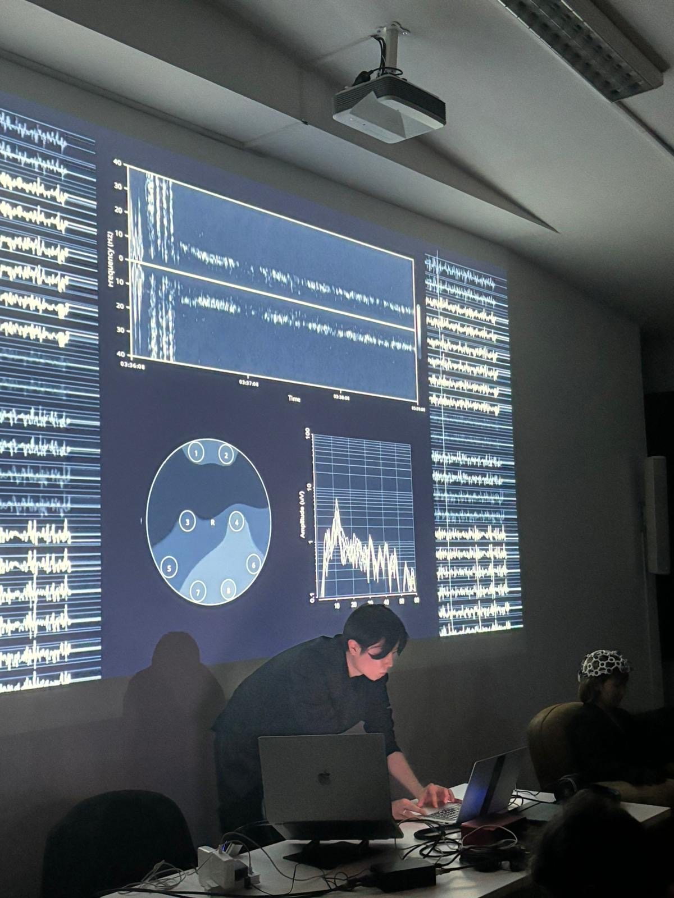

liberated frequencies, A/V performance at
IRCAM Forum Workshops 2026 Paris / Enghien-les-Bains

| "liberated frequencies" redefines auditory pleasure by freeing AI from human-centric aesthetics. In advance, glitch, noise, voice, and experimental sounds were rated by a subject based on perceived pleasure. During this A/V Performance, AI learns from the most highly rated sounds and generates evolving soundscapes. The subject wears EEG sensors measuring theta waves (4–8 Hz), linked to auditory pleasure. When brain activity indicates increased pleasure, the AI disrupts it—altering pitch, tempo, and rhythm to deviate from the subject’s preferences. This creates a feedback loop that challenges the boundaries of comfort, asking whether such “liberated” sounds disturb or expand our auditory experience. We will be performing at IRCAM Forum Workshops 2026 in Paris and Enghien-les-Bains. Credits: Artist: Keigo Yoshida Production assistant, narration, text: Rinko Oka Supported by: Flying Tokyo 2024 with METI and Rhizomatiks Acknowledgements: My heartfelt thanks to Daito Manabe for his guidance and the many thoughtful discussions since the beginning of Flying Tokyo 2024. I am also deeply grateful to Prof. Shinya Fujii for his neuroscientific perspectives and insights. Special respect to the OpenBCI team for their hardware and software, and to the ACIDS team at IRCAM. The neural synthesis in this work is powered by the RAVE model, created by Antoine Caillon and Philippe Esling. I would also like to sincerely thank Nils and Guillaume for the inspiring conversations during the forum. Their insights helped further refine both the technical and conceptual direction of the performance. Lastly, my sincere thanks to the IRCAM Forum team and the Centre des arts d’Enghien-les-Bains team for their generous support, hospitality, and for creating such a meaningful setting to present this work. I am also grateful to all the warm-hearted people I met there. |